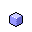

MiniVector
MiniVector is a canvas subclass that allows you to add vector-editing
capabilities to your program quickly and easily. If you provide tools for changing
them, users can create ovals, rectangles, and lines on the canvas. After drawing
them, they can select them, resize them, and move them. And it require virtually
NO setup! Just check out this screenshot fromt the example program:
As you may have noticed from the buttons on the bottom, it also allows you to retrieve bitmap pictures of any size that can be smooth, or unsmoothed. Also, you can load and save images simply by using strings.
Aren't you just dying to download it now?
|  | minivector.sit.hqx | 38.9K |